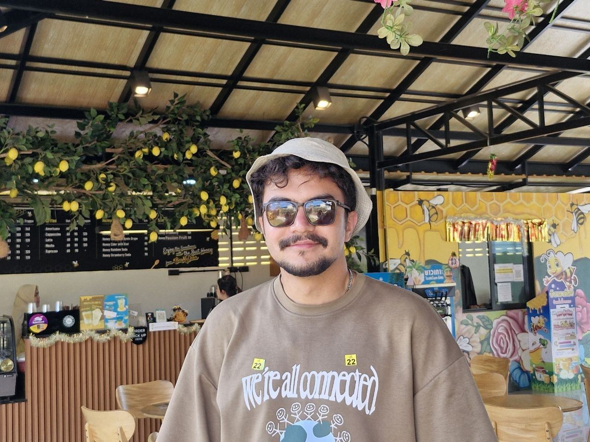
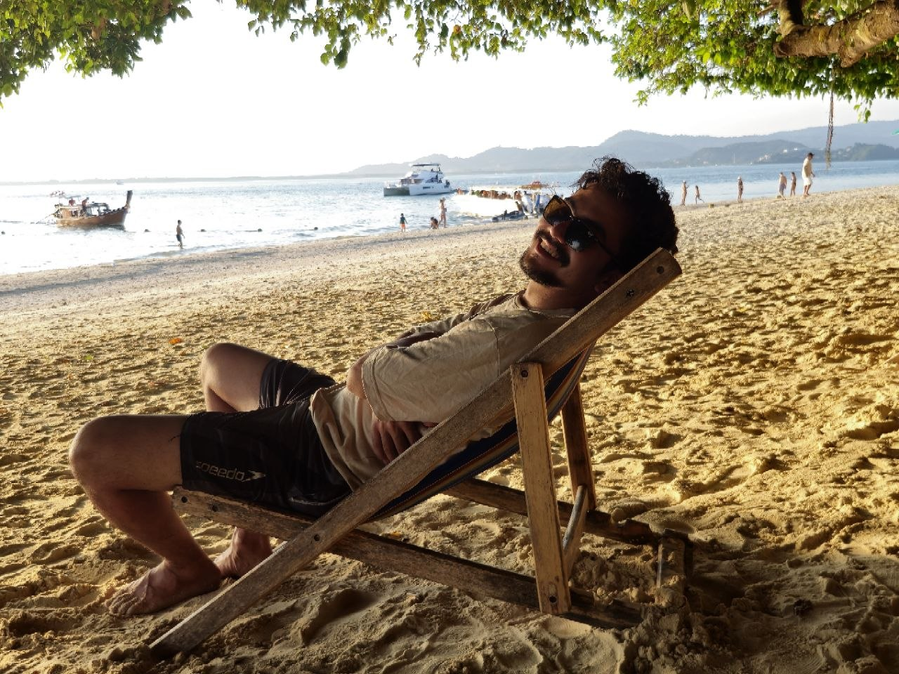
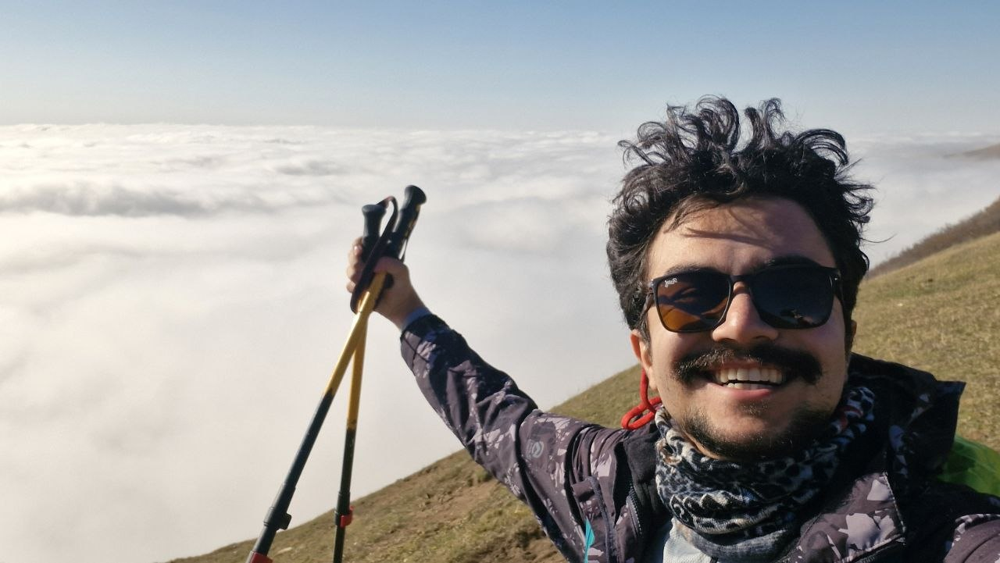
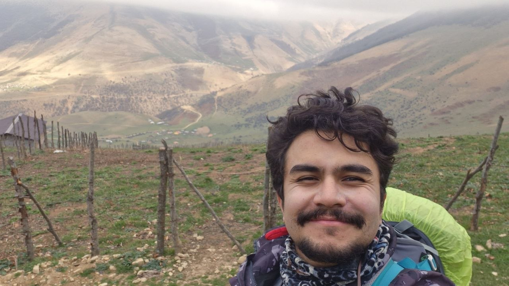

Clean, not obsessive
I like a tidy shared space and I’m happy to follow a fair cleaning schedule. Nothing complicated — just everyone doing their part.
I’m a 24-year-old master’s student at TU Darmstadt and looking for a friendly, respectful WG where people enjoy living together — without having to do everything together.

A little about me
I’m studying Information and Communication Engineering at TU Darmstadt. I really like the atmosphere of the city, and I’m excited to make a home here.
I’m pretty outgoing, positive, and usually joking around (sometimes with a bit of sarcasm). I enjoy meeting new people and can chat with almost anyone, but I’m happiest with a small circle of close friends. And even as an extrovert, I need some time to myself to recharge.
Most weekdays are a mix of university or work, the gym, and maybe something social afterward. At home, I’d love the occasional shared dinner or spontaneous conversation, while making sure everyone can enjoy their own space.
Bonus fact: I used to be an amateur astronomer, and I’ve volunteered with the Iranian Red Crescent.
Living together
I like a tidy shared space and I’m happy to follow a fair cleaning schedule. Nothing complicated — just everyone doing their part.
I’m always up for a kitchen chat, cooking together, or an outing. If you’d rather have a quiet evening alone, that’s completely fine too.
I enjoy being social, but I know home is also where people need to rest, study, and recharge.
I believe in paying rent on time, being straightforward about shared expenses, and talking things through when needed.

Outside university
I love mountaineering, trying new outdoor activities, working out, and reading. I also have a soft spot for astronomy — I used to spend time as an amateur astronomer. And after a busy day, I’m always happy to cook something high in protein, especially with company.


The ideal setup
“A WG where we can enjoy each other’s company, but everyone can also do their own thing.”
I’m flexible about how social a WG is. I’d be happy to cook together, go on an outing, or chat in the kitchen, but I don’t expect anyone to join in. A friendly atmosphere and mutual respect matter much more to me than a packed WG calendar.
Friendly atmosphere
A place where saying hello and having a chat feels natural.
Respect for shared space
Everyone doing their part in the kitchen, bathroom, and common areas.
Outgoing, with quiet time social life
Shared cooking or spontaneous plans when people feel like it.
Long-term stability
I’m hoping to find a place I can settle into for the long term.
The practical part
Let’s talk
I’d be happy to meet in person or have a quick call. English is easy for me, and I’d love to practice my B1 German too — please don’t hesitate to speak German with me!